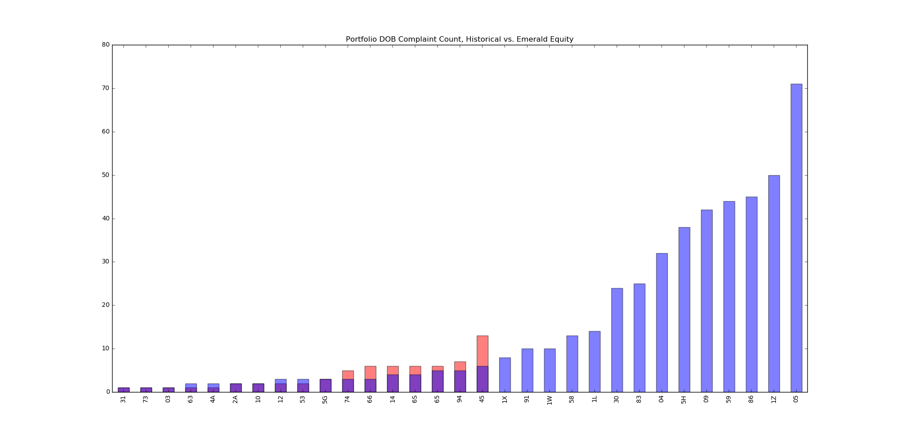
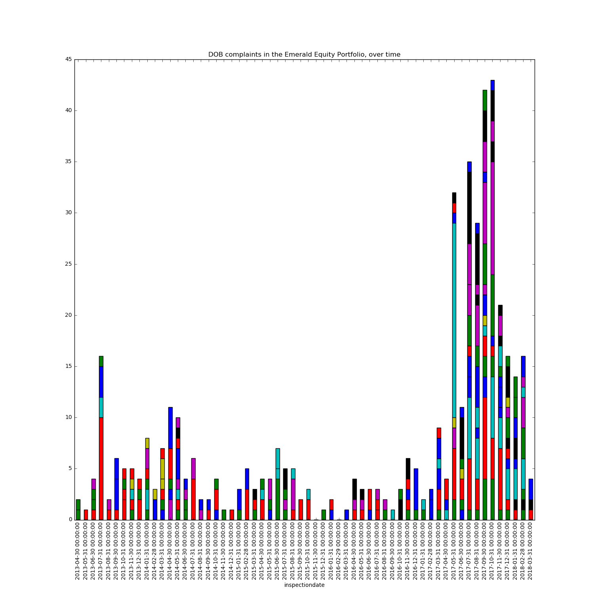
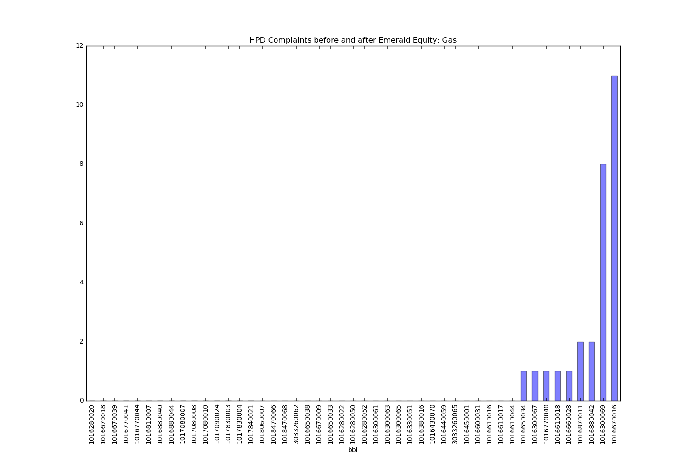
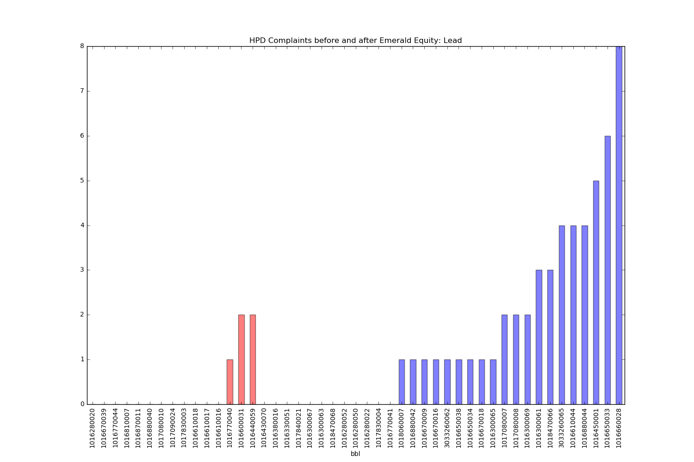
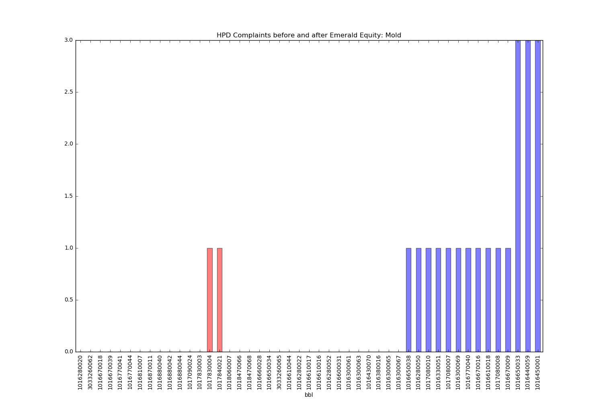

Complaints and Violations in Emerald Equity housing - East Harlem
We are looking at the number and types of complaints and violations in housing stock owned by Emerald Equity in East Harlem.
By Deeksha Kalra, Georgia Kromrei, Jack Bai, Yu-Hsuan (Jessy)
Some questions we are looking to answer after observing the data are:
1. No. of DOB (Department of Buildings) complaints of the same buildings in East Harlem before and after Emerald Equity owned them

2. Kinds and amounts of DOB complaints of same buildings in East Harlem before and after Emerald Equity owned them?

3. Kinds of HPD (Housing Preservation and Development) violations before and after Emerald Equity owned them (gas, lead, mold)



4. Percentage of B class ( based on priority of attention needed) violations in Emerald equity-East Harlem buildings compared to the rest of Manhattan? (B class has 5529 violations out of 9391) TK